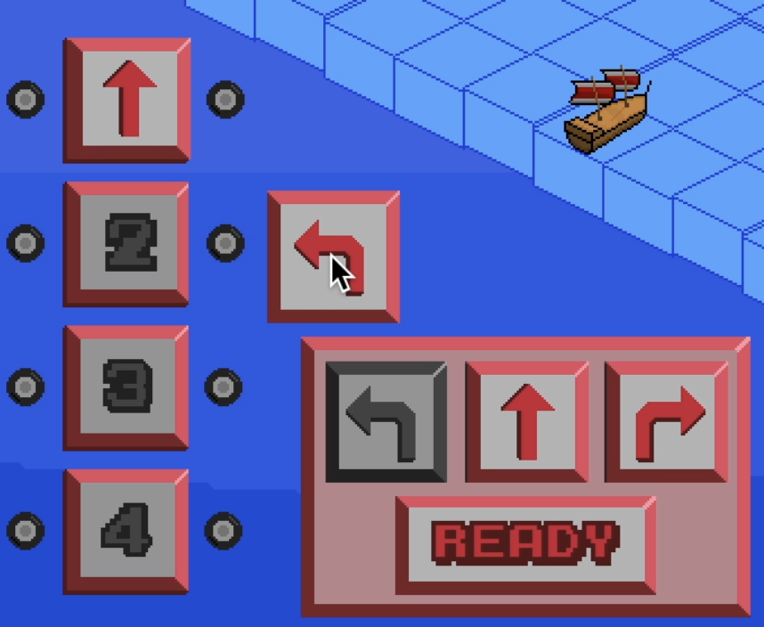
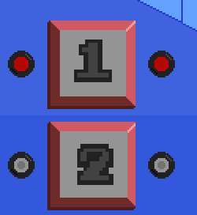
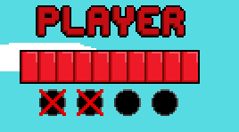

If you deplete the enemy ship health bar you win.
If your health bar is depleted you lose.
Both the player and enemy ships can sustain 10 hits.
You can fire cannons at the enemy ship and the enemy ship will fire cannons at you. Each successful hit will remove 1 hit point from the respective ship.
Colliding with the enemy ship will deduct one hit point from both ships.
Protip: Colliding with the enemy ship will stall their movement for the rest of the turn, but will not stall your ship. (This helps keep the game balanced.)
Each collision with the edge of the gameboard will deduct 1 hit point.
You can click and drag the arrows in the bottom left of the screen to place them on the different move positions.
After selecting your moves, press the ready button.
Each of your four moves will individually execute at the same time as each of the enemy ships four moves.
Protip: You don't have to fill every space. If you click Ready and you have left any of the movement placeholders empty, your ship will chill for that phase of the movement round (be careful though, because the enemy ship will still move [unless they have been stalled, see protip above]).
Selecting forward will move your ship forward one space.
Turning your ship is a little less straight-forward (pun definitely intended).
Your ship will first move one space forward, then one space in the selected direction (i.e. left or right).
You can fire up to two cannons at the end of each individual movement, one on each side of your ship.
You can specify which cannons you would like to fire by clicking the circles next to the move placeholders.
Cannons always fire in a straight line with a maximum range of 3 tiles.
You can fire up to four cannons per turn, and your ship will automatically reload two cannons at the end of each turn.
You can keep track of how many cannons you have available by checking under the player health bar.
Your enemy also has a four cannon limit per turn, but they do not reload their cannons until all four have been expended. This design choice helps to balance the game.
This game was heavily inspired by one of the puzzles in the video game Puzzle Pirates©.
All music and sound effects are public domain.
All pixel art was created by Jake Krebs.
Some of the fonts are modified versions of public domain fonts.
The game was developed by Jake Krebs using the GameMaker Studio 2 engine.